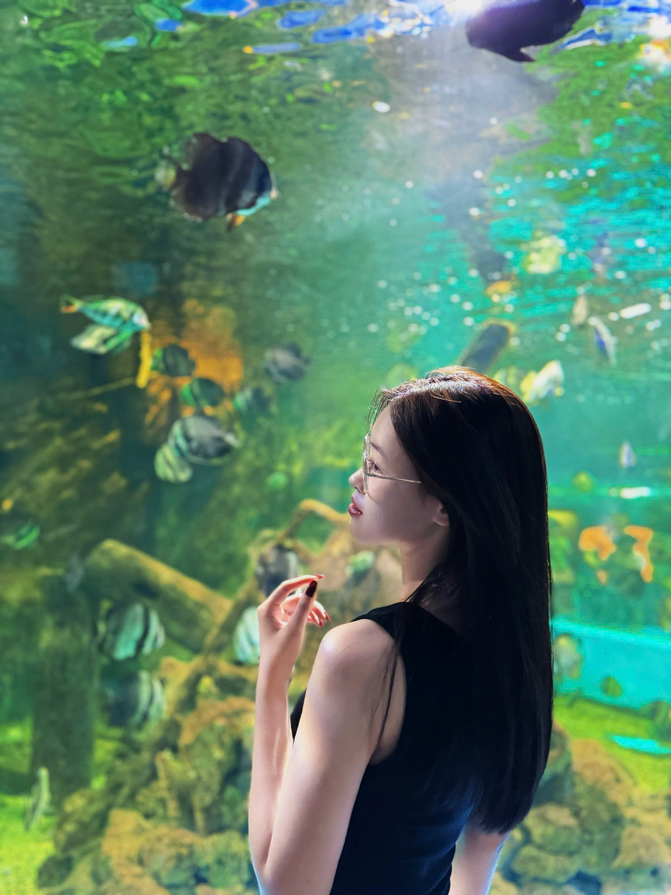

Nguyễn Thị Diệu Ly
Xin chào thầy cô và các bạn! Em là sinh viên ngành Quản trị Kinh doanh. Em đam mê tìm tòi những kiến thức mới, thích sự kết nối sáng tạo và luôn mong muốn áp dụng những công nghệ số hiện đại, các mô hình trí tuệ nhân tạo thông minh để nâng cao hiệu quả làm việc nhóm cũng như bứt phá giới hạn của bản thân trong thời đại số.
Ngành học
Quản trị Kinh doanh
Mã sinh viên
25051620
Lớp học phần
Nhập môn công nghệ số và ứng dụng trí tuệ nhân tạo
Niên khóa
2025–2026

Sở thích & Kỹ năng
Em đam mê tìm hiểu cách thức vận hành của doanh nghiệp và tư duy quản trị hiện đại. Em luôn rèn luyện tư duy logic, kỹ năng thuyết trình thuyết phục và khả năng tổ chức công việc.
Môn học này đã mở ra cho em cơ hội tuyệt vời để tiếp cận, áp dụng hệ sinh thái công nghệ vào công việc nhóm, giúp quy trình thực hiện trở nên chuyên nghiệp, nhanh gọn và tối ưu năng suất tối đa.
Mục tiêu đạt điểm A+
Mục tiêu hàng đầu của em là hoàn thành xuất sắc các sản phẩm học tập để đạt điểm số A+ trong học phần này.
Đồng thời, em mong muốn chuyển hóa những công nghệ số và phương pháp làm việc thông minh được học thành kỹ năng thực tế, tạo lợi thế cạnh tranh lớn cho bản thân trên con đường trở thành một nhà quản lý giỏi trong tương lai.